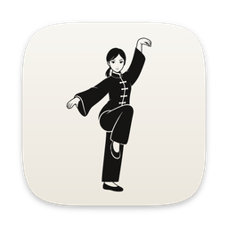
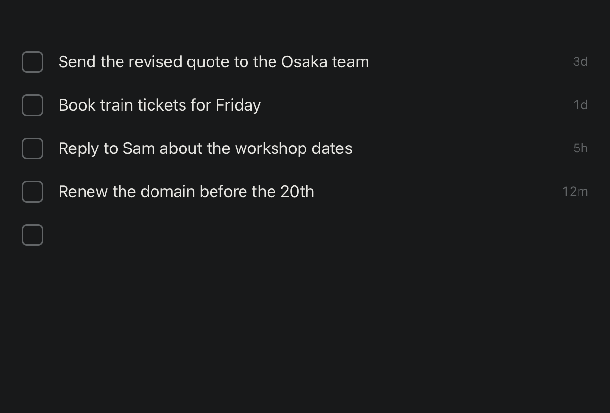
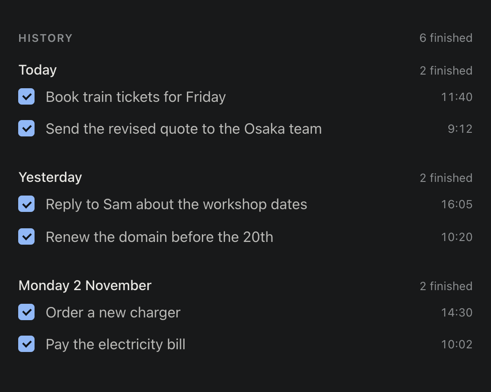

Write
Type. Enter. Done.
Write a follow-up on the empty line and press Enter. Click a line to change it. Tick the box when it is done, and it leaves the list.

Focus Zen Get Focus ZenA simple to-do list for Mac
Write it down. Check it off. Move on.
Open source. If it helps you, $5, the price of a coffee, keeps it going.

How it works
Write
Write a follow-up on the empty line and press Enter. Click a line to change it. Tick the box when it is done, and it leaves the list.

Look back
Finished items wait in Settings → History, grouped by the day you finished them, newest first.
Step away
Close the window and Focus Zen keeps running in the menu bar, with no Dock icon. One click brings your list back.
Privacy
Focus Zen has no account, no cloud and no tracking, and it never connects to the internet. What you write is kept in one small file on your Mac. Nobody else sees it, not even us.
~/Library/Application Support/
What it leaves out
No projects, tags or due dates. One list, in the order you wrote it.
No notifications, no badges, no streaks. It waits until you look.
A 9.7 MB download that starts in a moment.
Free on GitHub. $5 if you want to support it.